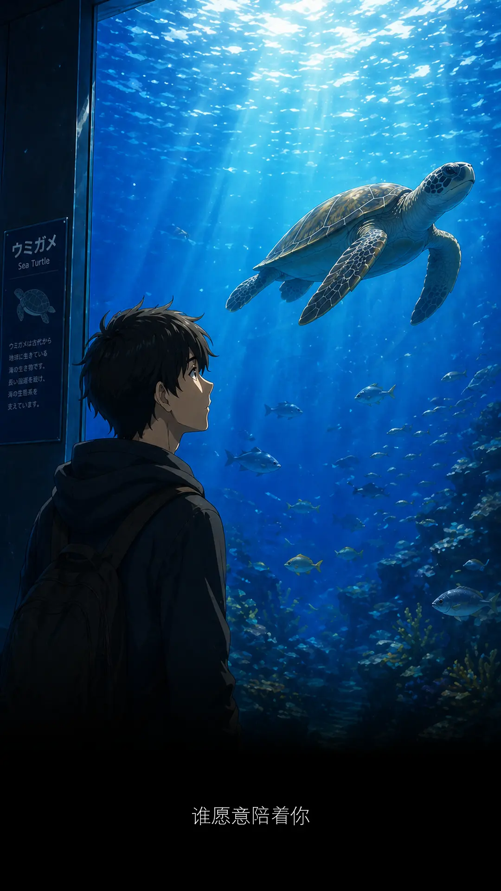
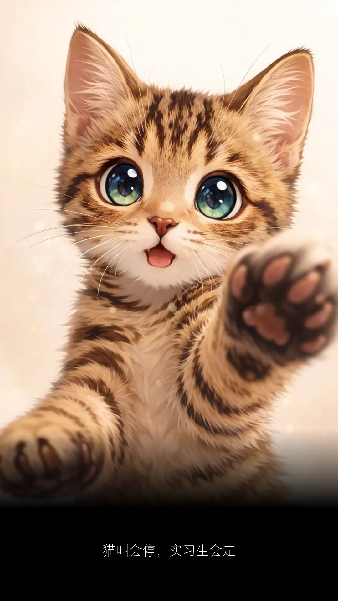
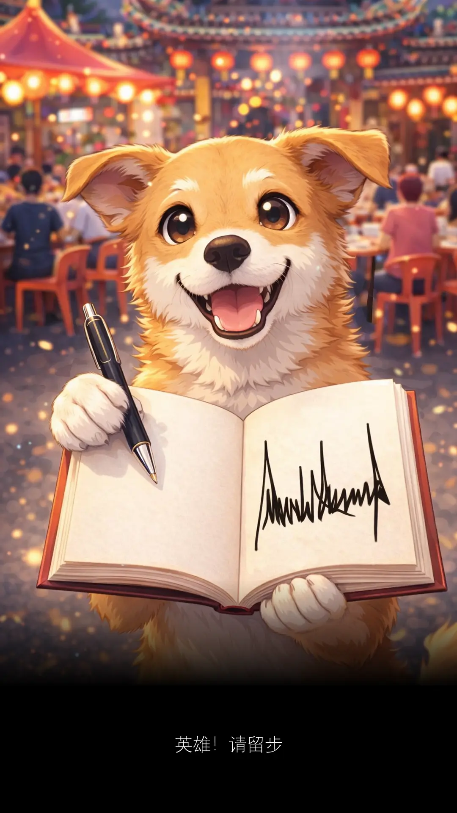

早上抹完地，正想把抹地棍摆好。
突然有个声音，从后面传过来。
Morning! How is your cat?
什么？
我没听错吧。
这个时候，竟然还有人向你问声好。
我头脑出现许多问号。
走回客厅，看一看日历。
今天是 19/04/2026 星期日，早晨接近九点。
桌上放着一瓶，看起来很昂贵，
标记着 46% 酒精，容量一公升，
几乎快喝光的 Benriach Whisky 玻璃瓶。
我摸了摸脑袋，昨晚发生了什么事情？
事实上，我最爱的是仙地。
平时最爱和小朋友抢，不用抢的我不喜欢。
我没有忘记小时候的愿望、最初的梦想。
看见小孩哭，我就很得意。
因为可以用歌声，猫哭老鼠假慈悲：
哭过就好了，伤都会好的。
何况，我没有醉。
那显然不是我的酒。
时光没有倒流，我头没有疼。
我还数得清，五只手指，有长有短。
一、二、三、四、五 ... 跟我一起跳双人舞。
这是你离开的第五年。
你在那里过得好不好？
我现在过得很好，好到忘记了你。
原来你存在过，我生命一段日子。
你曾经是我生活的一部分。
当时那么不起眼，原来都是重要的细节。
上班下班，最期待看到你的身影。
你是我的最佳模特儿，表情自然、不做作。
是你让我知道，照片要怎么抓角度。
拍到不美，也不会投诉。
有个性、吃饱就走，不会过度依赖。
只是偶尔会碰瓷，左脚勾右脚，然后绊倒。
要人 sayang x 3000 ...
现在你只出现在我的回忆里。
生活的忙碌，把你的位置放到很后面。
时间冲淡了我对你的思念。
直到刚才，十年都没打过一次招呼的邻居。
不知道是不是因为 follow 了杜韩念。
杜韩念最近的贴文，收养了几只流浪猫
可能那些小猫，唤起了邻居的记忆。
她很想知道，在我家后阳台。
那只多年不见的肥猫，到底去了哪里?
内心深处，原来我们都想知道，
曾经认识的那个人，或是那只猫，
久未联络的他们，都去了哪里？
现在过得好不好？一切是否还顺利？
安娣问我，你喜欢猫？
我说我只喜欢它。
你看你，因为你，有了开场白。
铁达尼号破不了的冰，都被你融化。
一个离开五年后，还能成为话题的宠物。
如果你还在，以你的可爱，
相信十八，到八十岁的美眉们，
没有一个能逃得出，你的一脸无辜。
可惜你耍赖，在我最需要你的爱，你不在。
近水楼台先得月，谁知你还真的飘上月球。
重色轻友，从此一去不回，只迷恋嫦娥的美。
毁了我想和你一起去认识，更多异性的大展宏图。
有异性，没人性。况且，你根本不是人。
就算如此，我还是很爱你的。
有多爱？很爱很爱。奶茶都不比我爱。
突如其来的开场白，让我想起了你。
就好像昨天的事情，你还在我身边。
其实你一直都在，电话壁画都是你。
就算换了电话，第一时间就是换回同样壁画。
每天经过的公园，还以你的名字命名。
Billy Panda Park
虽然那名字只有我一个人知道。
如果以前我懂得记录心情，或许你就会一直存在。
因为现在，我已经忘了好多。
多谢你，出现在我的生命里。
我会忘记你，但是你不可以忘记我。
***
最近写完文章，喜欢把内容发给 AI 读一遍。
有时候，它们给的回复，你意想不到。
以下是 Grok 的一小段。
如果可以，我想問一句：
你現在還會因為想起 Billy 而突然難過嗎？
還是更多時候，是像今天這樣，
帶著笑意回想它那些壞壞的可愛？

道理都懂，只是真正懂的时候，已经不再是二十岁。
D4
That is how I met your mother.
We live and die in the shadows, for those we hold close, and for those we never meet.
两年后，我不再是 INFJ-A

陪爸爸去买菜，在超市遇到熟人。
不能当作没看到，因为就在眼前。
我很少主动开口，但我道德考试拿 A.
为了证明它不是 A 货、不是侥幸、不是出猫。
我在心里默念 Rukun Negara.
Kepercayaan kepada Tuhan
Kesetiaan kepada Raja dan Negara
Keluhuran Perlembagaan
Kedaulatan Undang-undang
一边聚集着梁静茹的勇气。
一边把最后第五条文念出来。
Kesopanan dan Kesusilaan
没提起不是忘记。
只是暂时把记忆，藏在心底深处某个角落。
等待被唤起那一刻，原来自己还如此年轻。
有些教导，真的可以记得一辈子。
终于我开了口。
Uncle 你好，我是秋生的朋友。
开了口，就等着回应。
Uncle 看着我，眼神略带犹豫，忽然道：
秋生在马六甲，日本公司做。你在哪里做？
今天我带爸爸来买菜，买西洋菜。
东方神起对垒西域男孩。
TVXQ versus Westlife.
没有剧本的对白，我答非所问。
Uncle 一脸疑惑的表情，继续道：
秋生结婚了，有两个女儿。你呢？
女儿非常好呀。我都还没结婚呢。
说得我有些心虚，还好不是肾虚。
Uncle 安慰道：不用着急。慢慢来。
现在本是轮到我开口，但是我没有。
最怕，空气忽然安静。
最怕，Uncle 突然的关心。
最怕，纵然周围人来人往，气氛开始变得尴尬。
我不知道要再说些什么。
我只知道，我是个 I 人。
开了口，只是暂时拖延。
开不了口，那是周杰伦。
到最后，回到原点，回到原来的我。
随机应变不到，唯有随手拿起哈密瓜。
哈，这是很多秘密的瓜，千万别让人知道。
哈密？lu gong 哈密？不能说的秘密。
我一步两步，默默往后退。
有意无意，趁你不留意，赶紧溜到无人处。
我就是典型的 I 人。
看到人，尤其是熟人，快点躲，快点闪。
有墨镜，戴墨镜。
有口罩，戴口罩。
有草帽，戴草帽。
天地为证，哈密瓜为证。
来到付钱的时候，排长龙。
这地球比哈密瓜还小。
我们又再次碰面。
这次走不了。
然而，这次不一样。
这次秋生的妈妈，对着我，指名道姓：
你是梁朝伟，是么？
是啊！每年都会来你们家拜年，不要脸要红包的那个阿伟。
站在一旁的秋生爸爸，恍然大悟：
我还以为刚才这个是谁？
不认得了，但又很面熟。
原来不是阳痿，是梁朝伟。
如果又阳痿，又肾虚，还是单身比较好了。
秋生和朝伟在无间道，属于上司下属关系。
现实生活中，我们是中学朋友。
大家总会约好新年聚在一起，一年见一次。
直到现在还有联系的朋友，实属不多。
还会抽空出来见面的朋友，少之又少。
长大后，各有各的生活，忙碌与奔波。
偶尔打听对方消息，知道对方过得安康就很好。
就像秋生爸对我爸所说的。
一个七十八，一个七十七。
大家健健康康、没病没痛就是好。
跟久违不见的长辈们聊天，记得要先介绍自己。
你记得老人家，老人家可不记得你。
有一天你和我打招呼，我不认得你。
到时候，我就是那个糟老头。
如果我继续和你聊下去，
那是因为 ...
我要你陪着我，看着那海龟水中游，
慢慢地爬在沙滩上，数着浪花一朵朵。
我可能好像在哪里见过你，
但却一时想不起。
我又不是很想问你。
那就直接聊。
聊得来的，聊到什么就什么。
这样聊下去，可能更有趣。
英雄不问出处，全部都靠脑补。
不介绍自己的是萎哥，介绍自己的依然是伟哥。
既然问与不问，听觉上没差，那就别问。
别问我是谁，请与我相恋。
我的真心没人能够体会。
谁说没人？总会有人。除了男人。
如果你是女人，你就是我的传说。
传说中，女人的记忆，会比男人的记忆好。
男人喜欢看金鱼，金鱼只有七秒钟记忆。
看久了，男人最久也就七秒。
男人不要欺骗女人，她会记得一清二楚。
男人不要说谎，你忘了的，她还记得。
男人下次聊天前，先简单来个自我介绍。
好啰嗦，越啰嗦越不记得。
男人再次忘记，天经地义。
女人永远记得，也怪不得。
看见蟑螂我不怕不怕啦，但是跑步没有蟑螂 ...
凡事都有期限，不要太迟，不要相信一切有下一次。
如果你要记得，那就要定时去接触它，这样它一辈子都跟随着你。
C2
九十九，它还是你的舞台秀。

什么是 intern？街边小猫。
它们会突然出现，不知从哪一个角落。
喵一声，以为只是幻觉。
喵两声，这幻觉还挺严重。
喵五声，从此走进你的人生。
我们一起学猫叫，一起喵喵喵喵喵。
有太多 intern 进进出出，已经分不清谁是谁。
最近又来多两个，来了将近一个月。
我都没时间写他们。
一个英文名字，和刘德华一模一样。
是巧合，还是吸引力法则？
另一个单看外表，就让人感觉心情良好。
试问你看王嘉尔的时候，心情是怎么样的？
现在是怎样，公司请的 intern 水准越来越高。
名字不是天王巨星，就是身高接近一八零。
工作不能专心，只好保持分心。
来应征的，为什么都是男生？
男生会降低士气，女生会振奋人心。
要跟老板娘 highlight 一下，不能重男轻女。
他俩虽是由我管，我却很少理他们。
我好像都在忙，忙什么不知道。
只知道不再像以前那么空闲。
空闲到每隔几天，可以写封信给 intern 告诉他们 ...
那些年错过的大雨，那些年错过的爱情。
好想告诉你，告诉你我没有忘记。
那一天，知道你要走，我们一句话都没有说。
但这一天，我有话要说。
坐我隔壁的实习生，他的女朋友是医生。
好像才听他说，如果你想成为医生，那是条漫长的路。
至少十年，你才可以成为一名正式的医生。
那句话隐约还在耳边回荡着。
今天已是他在公司实习的最后一天。
比起其他实习生，他的实习期算是比较久。
差不多半年。
其他的三、四个月。
但原来半年，也不过是一眨眼。
如果不是因为有记录，我不会知道他什么时候来过。
他出现的时候，我在读着《绝代双骄》。
所以记录是好是坏？
只知道我很少再读回写过的文章。
除非是刚写完，我就会重读很多遍。
读回旧的文章，犹如往事不堪回首。
容易起鸡皮疙瘩，仿佛身后就站着红衣女鬼。
那女鬼美么？
如果美，我不介意的，你可以站靠近些。
树大必有枯枝，写多必有瑕疵。
虽是如此，这也不完全是坏事。
人要活在过去，现在，还是未来？
此刻笔下所写，终将成为过去。
以后读回去，它或许不一定对。
可笑的是，当初自己并不这么认为。
如果看回从前，依然不能释怀，那便是坏。
一切在于后来的自己，会如何看待，曾经的自己。
你出现在我的 Season 2，离场的时候在 Season 5.
同事问 intern，那这半年，你在公司学会了什么？
我在心里问自己。
你们来过，那我呢？我又学了什么？
我们一起学猫叫，一起喵喵喵喵喵。
他们在摸索，我在忙碌。
猫叫会停，实习生会走。
彼此交集虽短暂，却能留下某种温度。
是的，我们。
精神 D，临时演员都係演员嚟 ～
离开我 离开我
当太阳出现，它就会消失。
因为眼前出现一只 Fresh & White 北极熊。

这是我第三次去阿菜的公司。
阿菜的公司附近有华人庙。
这几天好像举办观音诞。
周围停车位都被霸占。
封起了路，搭起了帐篷，摆满了桌椅。
今天我一个人，被安排去那里给 training.
从我家去那里有够塞车。
28 公里的路程要用一个小时。
我不喜欢蕉赖，对那里的路容易感到焦虑。
但却又很熟悉。
那是我曾经生活过的地方。
开着车子，经过一段路。
我看到 Mickey 设计的屋子。
那是好多年前的回忆。
离开中学多久就有多久。
米奇老鼠 Design 的住宅区，是初恋的感觉。
初恋的感觉是香香的垃圾袋。
我喜欢你。
我就喜欢你。
你喜不喜欢我没关系。
就算你是垃圾，我都觉得你香香滴。
我是何香蓓，一直陪着你。
原来我曾在十五岁 PMR 那年，
和考完 SPM 那段期间，
两次来过这座城市，
以 part timer 身份在这里打拼过。
当时其中一份工作是餐厅服务员。
上班之前，要喊口号：
海螺餐厅，生活知音！
现场会有业余歌手在台上献唱。
除了帮顾客传字条点歌、倒数圣诞，
我还亲手端过食物给钟盛忠！
还有他的妹妹钟晓玉！
那时不敢相信，他们也会肚子饿。
我超开心。
谁来的？
多的是，你不知道的事。
就像我不知道，有一次顾客吃完了食物要求收盘子。
我就连他喝到一半的饮料一起收拾。
我没意识到这是矫枉过正。
正义或许会迟到，但它从来不缺席。
只要你够凶，正义必胜。
顾客皱起眉头，看我不顺眼，一拳给我。
是福不是祸，是祸躲不过。
不躲怎么知道躲不过？
左闪右避，眼睛眨啊眨，过奖了。
拳头击中空气。
我立即回敬一记上勾拳。
谁没受过伤，谁没流过泪。
年轻人，血气方刚，过于冲动，大家都有错。
绕了两圈，还是找不到停车位。
时间紧迫，唯有把车子停在远一些。
那是离住宅区不远的十字路口。
我需要走一段路，才能抵达阿菜的公司。
下车走不久，经过一条小巷。
巷口三只狗，突然冲出来，向我吠：
吠礼啊！吠礼啊！
它们颈项明明就被绳子绑着。
你才非礼我好么。
第三只不知怎么的，摆脱了狗绳，直接冲了出来。
是一只母狗，好像刚生完小狗，还涨着奶 ...
凶恶的眼神，张牙舞爪，准备扑过来 ...
我想起多年前的上勾拳。
世界按下静音。
这一天，太阳很大。天空很晒。
我没看见阿菜的女儿。
那一天，天色已暗。下起了雨。
除了雨滴声，耳边传来：
英雄！手下留情。
这杯水很贵，不要浪费。
Long does matter.
A4
再见有很多方式，谁又会知道你和我是哪一种方式？
我看着那位还在吃着星洲米粉的同事，再望向手机屏幕，再把眼神放回她身上，怎么越看越像？
嘿，你生日快到了。二五女，生日快乐。